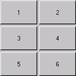
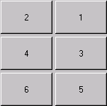

public class GridLayout extends Object implements LayoutManager, Serializable
GridLayout类是一个布局管理器，勾画出一个容器的组件在一个矩形网格。容器被划分成大小相等的矩形，并且一个组件被放置在每个矩形中。例如，下面是一个小程序，提供了六个按钮为三行两列：
import java.awt.*;
import java.applet.Applet;
public class ButtonGrid extends Applet {
public void init() {
setLayout(new GridLayout(3,2));
add(new Button("1"));
add(new Button("2"));
add(new Button("3"));
add(new Button("4"));
add(new Button("5"));
add(new Button("6"));
}
}
如果容器的ComponentOrientation性能水平和从左到右，上面的例子可以在图1中显示的输出。如果容器的ComponentOrientation性能水平和右至左的示例生成如图2所示的输出。
|  |  |
| Figure 1: Horizontal, Left-to-Right | Figure 2: Horizontal, Right-to-Left |
当双方的行数和列数已设置为非零的值，或者通过构造函数或由setRows和setColumns方法，列指定数量忽视。相反，列的数目是确定的，从指定的行数和布局中的组件的总数。因此，例如，如果已指定了三行和两列，并将九个组件添加到布局中，它们将被显示为三行三列。仅当设置为零的行数时，指定列数会影响布局的布局。
| Constructor and Description |
|---|
GridLayout()
创建一个默认的每一个组件的一个列的网格布局，在一个单一的行。
|
GridLayout(int rows, int cols)
用指定的行和列创建一个网格布局。
|
GridLayout(int rows, int cols, int hgap, int vgap)
用指定的行和列创建一个网格布局。
|
| Modifier and Type | Method and Description |
|---|---|
void |
addLayoutComponent(String name, Component comp)
将指定的组件添加到布局中的指定名称。
|
int |
getColumns()
获取此布局中的列数。
|
int |
getHgap()
获取组件之间的水平间隙。
|
int |
getRows()
获取此布局中的行数。
|
int |
getVgap()
获取组件之间的垂直间隙。
|
void |
layoutContainer(Container parent)
使用此布局布局指定的容器。
|
Dimension |
minimumLayoutSize(Container parent)
使用此网格布局确定容器参数的最小大小。
|
Dimension |
preferredLayoutSize(Container parent)
使用此网格布局确定容器参数的首选大小。
|
void |
removeLayoutComponent(Component comp)
从布局中移除指定的组件。
|
void |
setColumns(int cols)
将此布局中的列数设置为指定的值。
|
void |
setHgap(int hgap)
将组件之间的水平间隙设置为指定值。
|
void |
setRows(int rows)
将此布局中的行数设置为指定的值。
|
void |
setVgap(int vgap)
将组件之间的垂直间隔设置为指定值。
|
String |
toString()
返回此网格布局的值的字符串表示形式。
|
public GridLayout()
public GridLayout(int rows,
int cols)
一个，但不能同时，对rows和cols可以是零，这意味着任何数量的对象可以放在一行或一列。
rows -行，无意义的任何行数的值。
cols -柱，无意义的任意数量的列的值。
public GridLayout(int rows,
int cols,
int hgap,
int vgap)
此外，水平和垂直的空白被设置为指定的值。水平差距被放置在每个列之间。垂直的空白被放置在每个行之间。
一个，但不能同时，对rows和cols可以是零，这意味着任何数量的对象可以放在一行或一列。
所有的GridLayout构造函数按照这一。
rows -行，无意义的任何行数的值
cols -柱，无意义的任意数量的列的值
hgap -水平差距
vgap -垂直间隙
IllegalArgumentException -如果两
rows和
cols的值设置为零
public int getRows()
public void setRows(int rows)
rows -在这种布局中的行数
IllegalArgumentException -如果两
rows和
cols的值设置为零
public int getColumns()
public void setColumns(int cols)
cols -在这种布局中的列数
IllegalArgumentException -如果两
rows和
cols的值设置为零
public int getHgap()
public void setHgap(int hgap)
hgap -组件之间的水平差距
public int getVgap()
public void setVgap(int vgap)
vgap -组件之间的垂直间隙
public void addLayoutComponent(String name, Component comp)
addLayoutComponent 接口
LayoutManager
name -组件的名称
comp -要添加的组件
public void removeLayoutComponent(Component comp)
removeLayoutComponent 接口
LayoutManager
comp -要移除的组件
public Dimension preferredLayoutSize(Container parent)
一个网格布局的首选宽度是所有容器中的次列数组成最大的首选宽度、列数减一加的空白时间，加上左、右插入目标容器。
一个网格布局的首选高度是所有容器中的次行数组成最大的首选高度、行数减一加垂直填充时间，加上顶部和底部的目标集装箱的插图。
preferredLayoutSize 接口
LayoutManager
parent -其中的容器来做布局
minimumLayoutSize(java.awt.Container)，
Container.getPreferredSize()
public Dimension minimumLayoutSize(Container parent)
一个网格布局的最小宽度是所有容器中的次列数组成最大最小宽度、列数减一加的空白时间，加上左、右插入目标容器。
一个网格布局的最小高度是所有容器中的次行数组成最大最小高度、行数减一加垂直填充时间，加上顶部和底部的目标集装箱的插图。
minimumLayoutSize 接口
LayoutManager
parent -其中的容器来做布局
preferredLayoutSize(java.awt.Container)，
Container.doLayout()
public void layoutContainer(Container parent)
该方法将组件在指定的目标容器以满足约束条件的GridLayout对象。
网格布局管理器根据布局中的行和列的数量将容器中的自由空间划分成大小相等的部分，来确定各个组件的大小。容器的自由空间等于容器的大小减去任何插图和任何指定的水平或垂直间隙。在网格布局中的所有组件都给出相同的大小。
layoutContainer 接口
LayoutManager
parent -其中的容器来做布局
Container，
Container.doLayout()
Submit a bug or feature
For further API reference and developer documentation, see Java SE Documentation. That documentation contains more detailed, developer-targeted descriptions, with conceptual overviews, definitions of terms, workarounds, and working code examples.
Copyright © 1993, 2014, Oracle and/or its affiliates. All rights reserved.